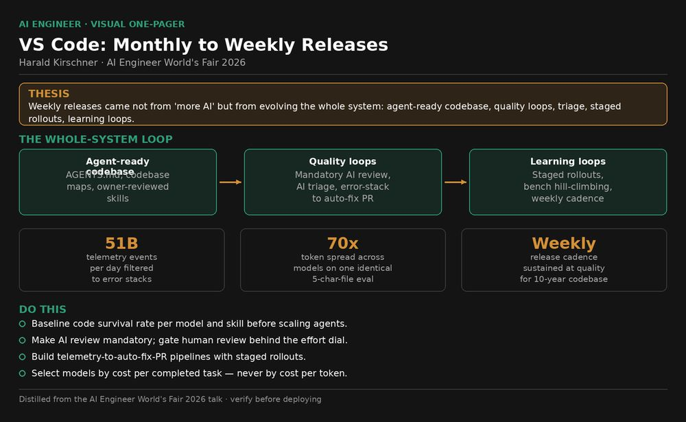

AI Engineer talks

Talk Notes: "How VS Code Went from Monthly to Weekly Releases with AI" — Harald Kirschner
Video: How VS Code Went from Monthly to Weekly Releases with AI — Harald Kirschner · AI Engineer channel · Oct 3, 2026 · 19:34 · Recorded at AI Engineer World's Fair 2026
Thesis
After 10 years of monthly releases, VS Code moved to weekly releases not from "more AI" but by evolving the whole system — codebase agent-readiness, quality loops, triage, staged rollouts, and learning loops — so higher velocity ships at quality and the team learns faster.
The mental model
The whole-system evolution loop that took releases from monthly to weekly:
flowchart LR
A[Agent ready codebase] --> B[Faster builds]
B --> C[Self correcting loop]
C --> D[Mandatory AI review]
D --> E[AI issue triage]
E --> F[Error stacks to auto fix PRs]
F --> G[Staged rollouts]
G --> H[Bench evals hill climbing]
H --> A
The telemetry-to-fix pipeline:
flowchart LR
A[51B telemetry events per day] --> B[Filter to error stacks]
B --> C[Fingerprint and bucket]
C --> D[Assign area owners]
D --> E[Auto create PR with diagnosis]
The token-efficiency insight — identical eval, wildly different cost:
flowchart TB
A[Same 5 char file eval] --> B[Cheapest model]
A --> C[Most expensive model]
C --> D[70x more tokens]
D --> E[Select models by cost per completed task]
Key points
The arc: three evolutions, in order
- Ship faster — agent-ready codebase, 10× faster builds, prototypes and daily feedback.
- Hold quality at speed — mandatory AI review with an effort dial, AI issue triage, telemetry-to-PR pipeline, staged rollouts.
- Learn faster — VSC-Bench hill-climbing, prototyping, daily sprints, smaller squads, durable ownership. ("A lot of people are missing out ... applying that product taste and applying that learning" as they write more code.)
Code survival — the headline metric
- Code survival (% of agent-written code actually committed): 55% → 86%, tracked over the past year. Started with GPT-4.1 (transcription of the talk's "GBD 4.1"; inferred), now Claude Opus 4.6 — the gain came from improving the harness and new models.
- The increase is the trust signal: developers ship AI code faster and in higher volume because more of it survives.
Success created problems
- Issue flood: AI helps people file issues → more quality issues from people in more language backgrounds, but also more automated low-quality ones.
- More open PRs from team velocity plus community contributions — and counter-intuitively, the number of community merged PRs is going up too, not just garbage PRs.
- Context: VS Code shipped monthly for 10 years since 1.0 (moved to weekly "several months ago"). Fun fact: the January release ships in February — iteration naming lag, not lateness.
Agent-ready codebase
- AGENTS.md as living docs: every agent in VS Code now has a slash command that generates a good AGENTS.md draft. They must be lightweight — a map of the codebase pointing at where to look — and living: they evolve as the agent makes mistakes and works.
- DevEx compounds: teams that invested in good documentation and onboarding win twice, because agents read the same docs humans do.
- Skills: encode expert knowledge that always gets bottlenecked on one person. Example: VS Code's long accessibility investment became an accessibility best-practices skill, reviewed and maintained by the accessibility area owner — short work previously requiring a human pull-in now ships everywhere.
- The litmus test: "Can a PM vibe code here?" — Kirschner vibe codes in the VS Code repo himself and measures acceptance by engineering: how much work does it cost, does it work out of the box locally, does it break when shipped.
Faster builds — because agents compound slowness
- TypeScript Go: 10× build improvement. A slow build is merely annoying for a human (context-switch while CI runs); with 10–20 agents hitting the same bottleneck, every slow part of CI/CD compounds. Automatic PRs + agents fixing code need the CI/CD loop as their feedback channel, so build speed is a velocity ceiling.
- Prototype before PR: his scrappy "ask questions tool" PR at the start of the year unblocked the conversation; within weeks the team had a polished, designed experience. Prototypes unlock participation and deeper design discussion instead of landing most of his work directly as VS Code PRs.
Let agents use your app — UI feedback loops
- Component browser: an automated build runs on every VS Code change, screenshots every component, and diffs them — catching ripple effects (example: adding a back button to the customization screen shifting something else). Doubles as fast PR review.
- Every developer is asked to attach a video or screenshot of their implementation so nobody re-runs everything from scratch — now automated by the component explorer.
- Self-correcting loop with the /launch skill: VS Code is an Electron app (all HTML), so Playwright can launch it, click through a specific scenario, collect logs, and verify a fix before and after — the agent reports back once it verified it worked. "Hit launch, move on to the next task."
- His rule: "If your agent cannot use your application, your product directly to get this feedback loop of is it all working, then that's a really big investment that pays off every time you work on UI." Alternatives: Xcode MCP for iOS apps ("magical"), Android tooling exists.
Mandatory AI code review
- GitHub Copilot automated review started unimpressive ("we're not convinced yet") but massively improved over weeks/months — now a mandatory review on every PR.
- Effort dial (low/medium/high): dial review effort by repo risk — explicit cost-benefit, not one-size-fits-all.
- The gate: humans don't even look at a PR until all review comments are resolved and addressed.
AI issue triage
- AI filters spam, enriches, translates, and assigns area owners — raising signal-to-noise on the flood.
- Human feedback loop on the automation: agents make mistakes, so they built a Chrome extension letting humans fix duplicated issues; corrections feed back into the agent's upstream work. "That's a really important thing to think about as you have agents doing the work — that you get the human feedback as well."
Telemetry → auto-fix PRs
- All own data, own tooling — no external tool. They'd had ML doing error sorting before; it's now a mix of criteria.
- Pipeline: 51B raw telemetry events/day → filter to error stacks with the full stack → fingerprint/group/bucket → 10 issues filed, assigned to specific area owners → an agent auto-creates a PR with an initial diagnosis.
- An error dashboard shows every stack with hit counts and affected-user counts so they can react fast.
- Example: the agent traced an error to a missing cancellation request in the RPC protocol (introduced by a change connected to find-symbols) — PR opened, ready to merge. "You don't care about errors, you just want a more stable codebase."
Staged rollouts
- From YOLO releases (release day → open the floodgates to 100%) to staged rollouts with monitoring of error logs and issues — web-app practice applied to a desktop app, because rollbacks on an installed app are expensive. "We should have probably done it earlier."
VSC-Bench — learning faster, on their own product
- Own evals of their agentic product, always at hand and easy to extend — all in GitHub issues.
- Low friction by design: file an issue to add a scenario → an agent picks it up from a template and bootstraps the scenario for you — pulling developer scenarios from issues and customer conversations into evals cheaply.
- Then hill-climb against the scenarios, confirm improvement offline, then online experimentation — "classic product lifecycle."
- What VSC-Bench covers (per the team's harness blog): custom agent modes, extension workflows, MCP and tool use, terminal and browser interaction, multi-turn conversations, multi-language tasks (TypeScript, Python, C++, …). Each task runs in a reproducible, containerized workspace; the harness launches VS Code, sends prompts, and evaluates the full agent loop — not just final code but whether the agent used editor, terminal, language services, browser, and tools the VS Code way.
- Measures solution correctness, agent effort, token efficiency, and latency — and the effort finding matters: scatter data showed an xhigh reasoning setting using more tokens while resolving slightly fewer tasks — past the useful effort sweet spot where extra thinking stops converting into better outcomes.
- PR-gated evals: any PR touching a core tool, system prompt, or loop behavior gets a
~requires-eval-assessmentlabel → Azure DevOps build of the merge ref → published as a versioned eval agent (0.0.0-dev.<sha>) to thevscode-evalsnpm feed (dev tag) → evald opens a pinned evaluation issue → analysis link posted back on the PR. Harness changes ship with benchmark numbers before merging.
The 70× token spread — "What 50,000 Runs of a 5-Line Eval Taught Us"
- The
say_helloeval: "Add HELLO to HELLO.txt" with two assertions (file exists, file contains "HELLO"). Same empty workspace, same tools, same fixed prompt, VS Code agent harness — a smoke test run before every benchmark suite, which quietly accumulated 50,974 runs across 30 models over six months. - Realistic floor: ~50 output tokens for the one-tool-call direct path (
create_file); the most disciplined model (Model-L) hit 55. - Direct-path rates: one model (Model-A) takes the direct path in 100% of passing runs; most models take it only occasionally; five models never do — they always plan, explore, search, or narrate first, even for a five-character file.
- Overhead patterns: planning before acting (52–99% of runs across 16 models); exploring an empty workspace (56–96%); narrating reasoning (1,441–3,676 tokens — 29–74× the floor); wrong tool for the job (one model uses a patch tool 95% of the time); terminal commands when a file API exists.
- Leanest vs. heaviest ≈ 70× for identical output — and the most expensive model "was not the high reasoning model" (models anonymized in the blog, so no names).
- Model size does not predict overhead: a larger model used 160 tokens vs. a smaller sibling at 485; a "mini" model was the single highest-overhead at 3,676 tokens. Newer generations trend more disciplined — training maturity, not parameter count, predicts effort calibration.
- Caveat (theirs): don't overfit the smoke test — keep the full benchmark alongside it. And the goal isn't to eliminate planning; it's to know "whether a model can tell the difference between a one-step task and a 30-step task."
Harness-level token efficiency (Copilot blog, same team)
- Cached input tokens up to 10× cheaper than uncached — prompt-prefix stability is direct cost reduction. Extended prompt caching (
prompt_cache_retention: "24h", cache moved to roomier GPU-local storage) raised cache hit rates +919% relative for GPT-5.4 at 40–60 min request gaps — picking up a session after a long break stays cheap. - Tool search (
defer_loading): only tool metadata up front; parameter schemas load on demand, and deferred tools sit outside the cached prefix so cache gains keep working. Results: −8.97%/−10.92% session tokens for the median Copilot user (GPT-5.4/5.5); Anthropic variant −18.03% session tokens, −11.09% per-turn tokens, plus −4.01% user error rate after moving to client-side embedding-guided tool search with a curated always-loaded core toolset. - Anthropic prompt caching: 4 deliberate breakpoints (end of tool defs, end of system prompt, two rolling anchors) → ~94% cache hit rate on agentic workloads.
- WebSockets became the default OpenAI transport (GPT-5.2+): TTFT p50 −19.46% (GPT-5.3-Codex).
- The trend driving it all: each new model generation consumes more tokens per task — harness efficiency is the counter-trend. Next: specialized subagents on the smallest, cheapest models for search/commands/summarization, and transparency UI for cache cold starts.
By the numbers
- 55% → 86% — code survival rate (agent-written code actually committed) over the past year; the trust signal behind shipping more AI code.
- 10 years — monthly release cadence since VS Code 1.0 (the January release ships in February); weekly for "several months."
- 50M+ — users shipped to by a very small team.
- 51B/day — raw telemetry events per day, filtered down to full error stacks before fingerprinting.
- 10 — issues filed to specific area owners after bucketing (each with an auto-created fix PR).
- 70× — output-token spread between leanest and heaviest model on the identical 5-character
say_helloeval. - 50,974 — runs across 30 models over 6 months behind that finding; ~50 tokens is the realistic floor (best model: 55).
- 100% / 0% — direct-path rates: the most disciplined model vs. five models that never take the direct path.
- 29–74× — overhead of the extreme band (Model-AB 3,676 avg tokens) vs. the realistic floor.
- 10× — TypeScript Go build improvement; also the cost ratio of uncached vs. cached input tokens (OpenAI cached pricing).
- 10–20 — concurrent agents at which a slow CI/CD bottleneck compounds.
- 5–10 min — default OpenAI prompt-cache lifetime (up to ~1 hr); extended retention keeps it warm for 24h.
- +919% — relative cache-hit-rate increase for GPT-5.4 at 40–60 min request gaps (extended prompt caching).
- 94% — Anthropic prompt-cache hit rate on agentic workloads after reworking breakpoint placement.
- −18% — median-user session token cut from Anthropic tool search (−9 to −11% from the OpenAI variant).
- −19% — WebSocket TTFT p50 reduction (GPT-5.3-Codex); WebSockets now default for OpenAI GPT-5.2+ across Copilot products.
- 4 — deliberate cache breakpoints (Anthropic): end of tool definitions, end of system prompt, two rolling message anchors.
- (No public figures were given for effort-dial distribution — the only stated dial stat is qualitative: low/medium/high effort set by repo risk.)
Notable quotes & data
- Code survival 55% → 86%.
- 51 billion telemetry events per day → error stacks → auto-fix PRs.
- Most expensive model took 70x more tokens for the same 5-character file.
- "It's not about using more AI as you work day-to-day... You're not token maxing. It's about evolving the whole system, how you're shipping software, to actually make better use of AI along the whole process."
- "If your agent cannot use your application, your product directly to get this feedback loop of is it all working, then that's a really big investment that pays off every time you work on UI."
- "Don't just tune how you work with agents, but tune where they get feedback. How do you build these loops?" (closing: "find out where your bottlenecks are... and figure out... what's blocking you to move even faster — it's a constant iterative cycle.")
- "The model is the engine, the harness is the car." (VS Code harness blog — why they spend most engineering time on context assembly, tools, loops, and evaluation, not model choice.)
- "The goal is not to eliminate planning. It is to understand whether a model can tell the difference between a one-step task and a 30-step task." (50,000-runs blog)
Tokenomics / efficiency angle
- Token efficiency: 70x token spread across models for an identical eval — token efficiency is a first-class model criterion.
- TypeScript Go: 10x faster builds unblock agent CI/CD loops.
- AI code-review effort dial (low/medium/high) for explicit cost-benefit.
- Price-per-token tells you nothing; cost-per-completed-task is the metric. The 70× eval ran anonymized models (Model-A…AC) — selection must come from your own benchmark on your own harness, because overhead comes from behavior (planning, exploring, wrong tools, narrating), not size: a mini model was the worst offender; a larger model beat its smaller sibling. Newer generations trend more disciplined.
- Model selection shouldn't be the developer's burden: route on effort calibration, token efficiency, and tool discipline automatically — that's what VS Code's auto model selection invests in.
- Cache is money: cached input up to 10× cheaper; prefix stability (breakpoints, stable tool-def boundaries, 24h retention) is a direct cost lever. Flag cache cold starts (session resume after a long pause) as cost events.
- Tool search is proven, A/B-tested savings: −9% to −18% session tokens with success rate held — load schemas on demand, keep deferred tools outside the cached prefix.
- Effort has a sweet spot: VSC-Bench showed xhigh effort costing more tokens while resolving fewer tasks. Dial effort by risk — low/medium/high — and verify, don't assume more thinking = better.
- Counter-trend awareness: each new model generation consumes more tokens per task; harness-level wins (caching, deferral, subagents on the cheapest models) are what keep cost per task flat. Measure tokens per passing task, not per run.
- Log tool sequences, not just counts:
{tool_sequence, output_tokens, pass}tells you where overhead came from — the only way to attribute and cut it.
Local-deploy takeaways
- Make token efficiency a model-selection criterion: the 70x spread on an identical eval proves price-per-token tells you almost nothing — benchmark cost-per-completed-task per model before putting it behind the enterprise router.
- Code survival rate (agent-written code actually committed) is the deployable metric for agent quality — track it per model/skill combo; it directly measures wasted generation tokens vs. kept output.
- Review-effort dials are the cost-control pattern: low/medium/high effort settings with explicit cost-benefit tradeoffs — apply the same dial to retrieval depth, planning effort, and verification loops.
- The telemetry-to-PR pipeline runs on their own data with their own tooling — no external service. That's the local-first pattern: fingerprint error stacks, route to owners, auto-open diagnosed PRs, all inside your stack.
- PR-gated evals for harness changes: any PR touching prompts, tools, or loop behavior ships with benchmark numbers before merging (
~requires-eval-assessmentpattern: build → versioned eval agent → evald issue → report link on the PR). - Stand up a smoke eval first (
say_hellopattern): smallest unambiguous task, run constantly as preflight before nightly evals, model onboarding, and infra changes; log tool sequences + output tokens so harness regressions show up before they get expensive across long sessions.
Decision framework
Kirschner never hands you a checklist — he gives an order of operations and a method for finding the next bottleneck:
- Fix in this order: (1) ship faster — agent-ready codebase (AGENTS.md, codebase maps, skills) plus fast builds, because 10–20 agents compound every bottleneck; (2) hold quality at speed — mandatory review with effort dials, AI triage with human feedback loops; (3) learn faster — own evals, hill-climbing, online experimentation. Skip a stage and the previous one strands you: speed without quality gates → issue/PR floods; quality gates without evals → shipping fast but not the right thing.
- Measure first, then evolve: code survival rate before adding more agents; tokens per completed task before routing models; find the bottleneck, fix it, then find the next one — "a constant iterative cycle."
- Traps he named:
- "More AI" alone doesn't do it — "you're not token maxing." Velocity is a system property, not an adoption percentage.
- Don't tune agent craft before feedback loops: "don't just tune how you work with agents, but tune where they get feedback. How do you build these loops?"
- Every automated loop needs a human correction path that feeds mistakes back upstream (triage extension → agent prompts/skills; review gate → PRs) — don't let automation drift.
- Don't overfit one eval: keep the broad suite alongside the smoke test.
- Staged rollouts for anything installed: rollbacks are expensive; "we should have probably done it earlier."
- Prefer prototypes to big PRs when unblocking discussion — a scrappy PR that gets the idea visible beats a perfect one that never starts the conversation.
How to apply it
- Baseline code survival rate (agent-written code actually committed) per model and skill combo; re-measure quarterly. The VS Code arc was 55% to 86%.
- Add AGENTS.md and a generated codebase map to every active repo — keep them lightweight and treat them as living docs that evolve as the agent makes mistakes; encode area expertise as skills reviewed and maintained by the area owner. Run the PM litmus test: can a non-engineer vibe code in this repo without breaking things?
- Attack build/CI speed before scaling agents: any step 10–20 concurrent agents will hit becomes a compounded bottleneck. Target 10× on the worst offender (VS Code's was the TypeScript build).
- Stand up a self-correcting UI loop: automated component screenshots on every build with diffing, plus a
/launch-style skill so the agent can click through your app, collect logs, and verify fixes before/after — never accept "it looks perfect" without the agent driving the app. - Turn on mandatory AI code review with a low/medium/high effort dial keyed to repo risk; block human review until AI review comments are resolved.
- Stand up AI issue triage — spam filter, enrich, translate, assign area owners — and build a human correction path (e.g., a fix-duplicates tool) whose corrections feed back into prompts and skills up front.
- Pipe telemetry into error-stack fingerprinting on your own data; auto-open PRs with an initial diagnosis routed to area owners; ship via staged rollouts with monitoring (rollbacks on installed apps are expensive).
- Build an internal agentic bench in the VSC-Bench pattern: template-generated scenarios seeded from GitHub issues (an agent bootstraps each scenario from a template to keep authoring cheap), hill-climb against them, offline then online runs; rank models by tokens per completed task and expect large spreads. Gate harness PRs on bench numbers before merge.
- Add a smoke eval (
say_hellopattern) as preflight before nightly evals, model onboarding, and infra changes; logtool_sequence+output_tokens, not just pass/fail. - Apply harness-level token levers before buying more model: keep prompt prefixes stable and caches warm (cached input up to 10× cheaper), defer tool schemas until searched, and push narrow work (search, command-running, summarization) to subagents on the smallest/cheapest models.
Sources
- Full spoken transcript (worked): https://www.usetranscribe.io/yt/I2LL_wd89-A/
- Video: https://www.youtube.com/watch?v=I2LL_wd89-A
- "What 50,000 Runs of a 5-Line Eval Taught Us" — VS Code Eval Team, Jun 19 2026 (the 70× eval, overhead patterns, model-size finding): https://code.visualstudio.com/blogs/2026/06/19/what-50000-runs-taught-us
- "Improving token efficiency for GitHub Copilot in VS Code" — Ryan Caldwell & Bhavya U, Jun 17 2026 (prompt caching, tool search, WebSockets, subagent direction): https://code.visualstudio.com/blogs/2026/06/17/improving-token-efficiency-in-github-copilot
- "The Coding Harness Behind GitHub Copilot in VS Code" — Julia Kasper, Megan Rogge & Aaron Munger, May 15 2026 (VSC-Bench design, PR-gated eval assessment, "the model is the engine, the harness is the car"): https://code.visualstudio.com/blogs/2026/05/15/agent-harnesses-github-copilot-vscode
- Note: the three blogs are VS Code team posts Kirschner referenced in the talk (the 70× eval and token-efficiency blogs by name); none is bylined to him personally.